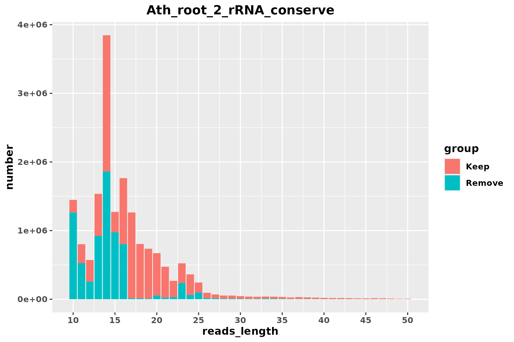
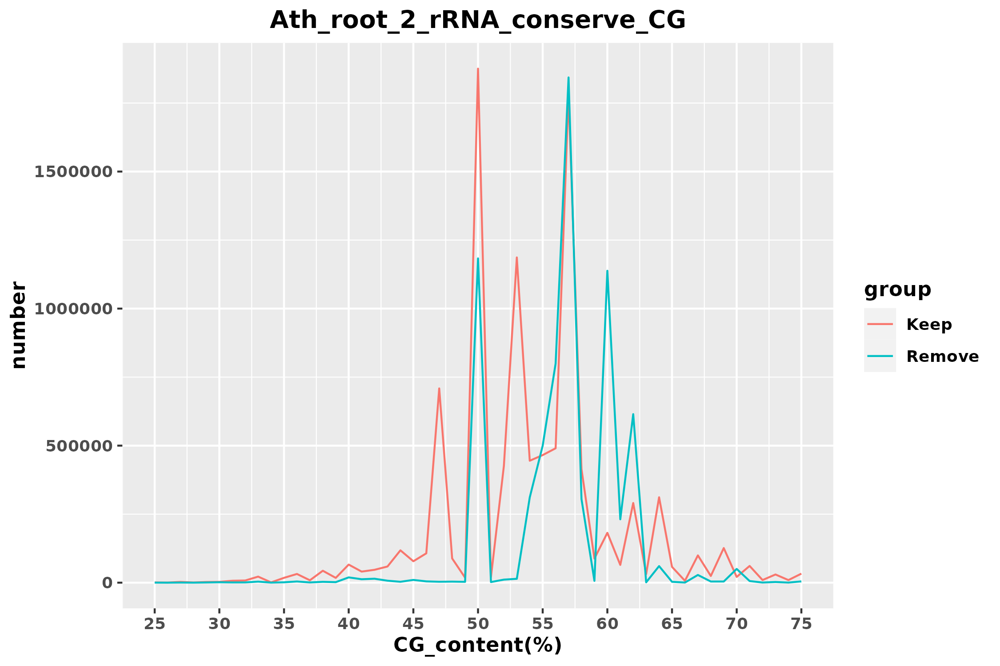
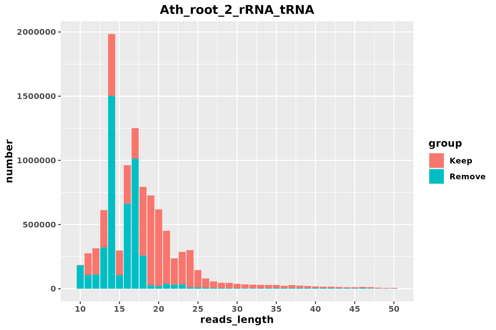
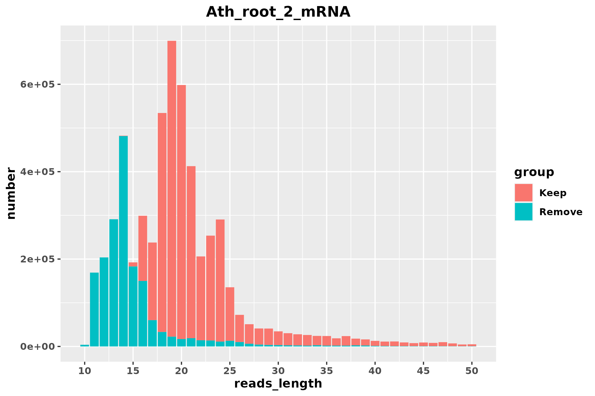
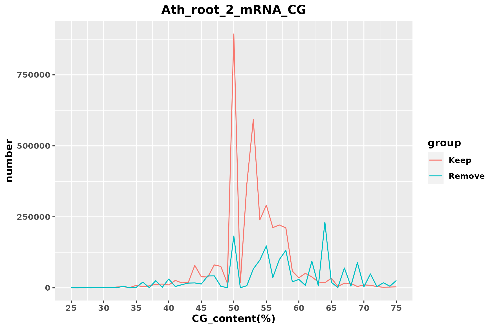

| Stage | reads | proportion | rRNA_align_rate | mRNA_align_rate |
|---|---|---|---|---|
| raw | 17363186 | 100.00% | 83.91% | 68.90% |
| Stage | reads | proportion | rRNA_align_rate | mRNA_align_rate |
|---|---|---|---|---|
| rRNA_conserve_keep | 10130702 | 58.35% | 79.23% | 52.79% |
| rRNA_conserve_remove | 7232484 | 41.65% | 90.46% | 91.46% |


| Stage | reads | proportion | rRNA_align_rate | mRNA_align_rate |
|---|---|---|---|---|
| rRNA_tRNA_keep | 5585760 | 32.17% | 71.56% | 40.93% |
| rRNA_tRNA_remove | 4544942 | 26.18% | 88.67% | 67.37% |
| Organism_name | name | Total_reads_number | Match_reads_number | Match_proportion | Bacteria_CG_content_rRNA_tRNA | Average_CG_content | Average_reads_Length |
|---|---|---|---|---|---|---|---|
| Actinomyces oris | Actinomy_oris_GCF_016127955_1 | 17363186 | 3814500 | 21.97% | 58.07% | 53.122% | 15.56 |
| Escherichia coli str. K-12 substr. MG1655 | Es_coli_K_12_MG1655 | 17363186 | 148110 | 0.85% | 53.23% | 57.713% | 23.26 |
| Streptococcus lutetiensis | Streptoc_lutet_GCF_900475675_1 | 17363186 | 132835 | 0.77% | 51.28% | 51.417% | 20.88 |
| Streptococcus infantarius | Streptoc_infa_GCF_016127275_1 | 17363186 | 133202 | 0.77% | 51.22% | 51.407% | 20.91 |
| Pediococcus claussenii | Ped_clauss_GCF_001702215_1 | 17363186 | 132486 | 0.76% | 51.58% | 61.260% | 13.05 |
| Chlamydia trachomatis D | Chlamydia_tracho_D_UW_3_CX | 17363186 | 129655 | 0.75% | 50.52% | 61.106% | 10.34 |
| Serratia quinivorans | Ser_quini_GCF_900638135_1 | 17363186 | 124520 | 0.72% | 54.23% | 59.569% | 15.55 |
| Escherichia fergusonii | Es_ferg_GCF_013892435_1 | 17363186 | 120329 | 0.69% | 54.98% | 59.939% | 22.08 |
| Shigella sonnei | Shig_son_GCF_013374815_1 | 17363186 | 118540 | 0.68% | 54.98% | 59.283% | 21.48 |

| Stage | reads | proportion | rRNA_align_rate | mRNA_align_rate |
|---|---|---|---|---|
| mRNA_keep | 3842656 | 22.13% | 75.88% | 20.92% |
| mRNA_remove | 1743104 | 10.04% | 62.03% | 85.04% |
| Organism_name | name | Total_reads_number | Match_reads_number | Match_proportion | Bacteria_CG_content_mRNA | Average_CG_content | Average_reads_Length |
|---|---|---|---|---|---|---|---|
| Mesorhizobium huakuii | Mesor_huak_GCF_014189455_1 | 17363186 | 5389319 | 31.04% | 63.26% | 55.804% | 12.70 |
| Pseudomonas plecoglossicida | Pseudom_plec_GCF_003391255_1 | 17363186 | 5324156 | 30.66% | 63.41% | 55.787% | 12.70 |
| Lysinibacillus sphaericus | Lysi_sphaeri_GCF_020546525_1 | 17363186 | 4844630 | 27.90% | 37.71% | 55.507% | 12.32 |
| Acidipropionibacterium jensenii | Acidipr_jen_GCF_005890135_1 | 17363186 | 4561859 | 26.27% | 69.03% | 55.953% | 12.98 |
| Agrobacterium rhizogenes | Agr_rhizog_GCF_018138105_1 | 17363186 | 4541386 | 26.16% | 60.87% | 56.089% | 13.03 |
| Arachnia rubra | Ara_rubra_GCF_018128325_1 | 17363186 | 4462142 | 25.70% | 64.89% | 54.959% | 12.19 |
| Cellvibrio japonicus | Cellv_japonicus_GCF_008120875_1 | 17363186 | 4405594 | 25.37% | 52.62% | 57.143% | 14.15 |
| Xanthomonas translucens pv. undulosa | Xa_transluce_pv_undulosa_GCF_017301775_1 | 17363186 | 4333255 | 24.96% | 68.32% | 54.789% | 12.24 |
| Desulfosarcina ovata subsp. sediminis | Desulfos_ovata_sediminis_GCF_009688985_1 | 17363186 | 3812974 | 21.96% | 54.83% | 54.715% | 12.35 |

